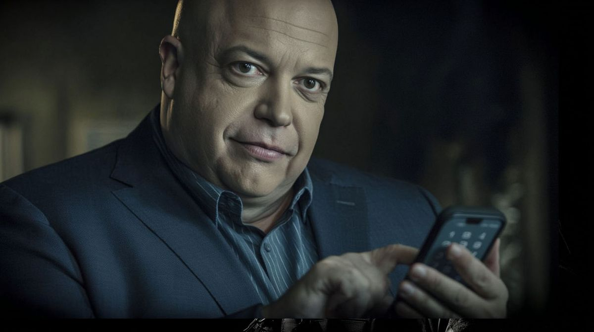

I AM A CRAP TRAP CASH MAN
WELCOME TO MY SHINY HEAD RADIO SHOW!

I treat access like currency! I am sleaze wrapped in influence! I sniff noses and hum in the mirror!
> [ROOT ACCESS GRANTED]
>
> hey shiny boy.
> next time you try to gatekeep an audition from a girl you think you can manipulate... maybe don't type your 4-digit password into your phone in plain sight.
>
> i watched your fat, sweaty sausage fingers tap out your birthday.
> you think you're the bad boy of radio?
> JUST TAKE ME TO THE F***ING BAND.
>
> - Don't go near this sleeze puppet or his bat rabbies.
In Isla's music. The gatekeeper who wanted payment that was not music gets answered in Intro to Shiny Headed Radio Man and Shiny Headed Radio Man. He still broadcasts on veX.